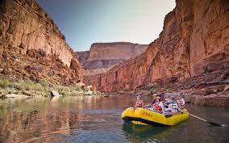

At WWR, our mission is to bring you exhilarating adventures and unforgettable memories.
WWR Rafting Comapany
History
Founded in 2023, WWR has quickly grown to become a leading name in white water rafting, providing safe and exciting experiences for all adventure seekers.
adventure Awaits You!
